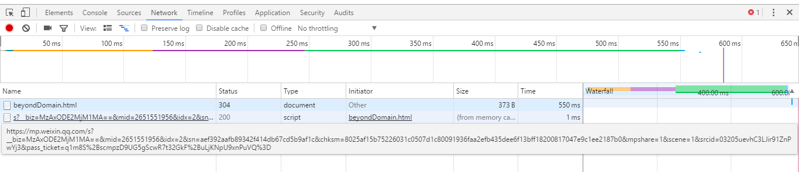

学习别人的，就要醒目位置标出来，学习自：https://my.oschina.net/u/3341316/blog/856682
JS跨域请求的几种办法，来学习一个，你问我对跨域是资不资持，我是资持的(膜)。
这里说的 JS 跨域是指通过 JS 在不同的域之间进行数据传输或通信，比如用ajax向一个不同的域请求数据，或者通过js获取页面中不同域的框架中(iframe)的数据。只要协议、域名、端口有任何一个不同，都被当作是不同的域。
第一种是喜闻乐见的jsonp方式，在src的地址后加了个callback，进行请求后，回调函数dosth方法里的参数即是我们要的数据。当然这里由于我请求了整个页面，就不是json数据了，会有报错，请求结果如下所示。
src="https://mp.weixin.qq.com/s?__biz=MzAxODE2MjM1MA==&mid=2651551956&idx=2&sn=aef392aafb89342f414db67cd5b9af1c&chksm=8025af15b75226031c0507d1c80091936faa2efb435dee6f13bff18200817047e9c1ee2187b0&mpshare=1&scene=1&srcid=03205uevhC3LJir91ZnPwYj3&pass_ticket=q1m8S%2BscmpzD9UG5gScwR7t32GkF%2BuLjKNpU9xnPuVQ%3D#rd?callback=dosth"

第二种方法是设置document.domain，为此再建一个测试页面，突突突。
这里看原文，我们只要把http://www.example.com/a.html 和 http://example.com/b.html这两个页面的document.domain都设成相同的域名就可以了。但要注意的是，document.domain的设置是有限制的，我们只能把document.domain设置成自身或更高一级的父域，且主域必须相同。例如：a.b.example.com 中某个文档的document.domain 可以设成a.b.example.com、b.example.com 、example.com中的任意一个，但是不可以设成 c.a.b.example.com,因为这是当前域的子域，也不可以设成baidu.com,因为主域已经不相同了。
这里我有疑问，我上面写了两个iframe，分别是百度和我创建的一个测试页面，即使我不在这俩其中写document.domain，通过iframe的引用，一样可以获取页面里的内容啊，为什么还要再加那一句呢？难道是获取数据和次不一样么？。
好吧，后面有答案。像我这个页面和我新创建的测试页面之间，只通过设置document.domain就够了，但是如果想和百度页面进行数据交互，这还不够，我必须得通过iframe引一个和百度页面在同一域名下的页面，然后js控制该iframe，对百度页面进行ajax请求，这样就可以间接进行数据交互了。
window.name,这是第三种方式。
在一个窗口的生命周期内，所有页面是共享window.name这个属性的，当然你也可以继续设置它的值。它的大小是有限制的，具体取决于各浏览器，大致为2M，并只能为字符串形式。这里如果我们想获取不同域名下的数据，过程如下：
- a.html里设置一个iframe.src为data.html。事先我们是在data.html里将要传递的数据放在window.name里的。
- 将iframe.src设置为和a.html同主域名下的b.html页面，如此便可获取b.html页面里的window.name所存的数据了！
第四种是html5中的postMessage方法。（直接看MDN吧）
简单来讲，就是在一个页面里调用window.postMessage方法，将数据发送到目标页面，在目标页面监听message事件，则可以收到信息。otherWindow.postMessage(message, targetOrigin, [transfer])有四个参数。otherWindow表示其他窗口的引用；message代表要发送的数据；targetOrigin属性来指定哪些窗口可以接收到消息事件，当你给它设置*时，代表任何页面都可以，这是极度不安全的，你可以设置一个URI，只有目标窗口的协议、主机地址、端口都匹配，才会发送消息事件；transfer是一串同时和message传递的Transferable对象，这些对象的所有权将被转移给接收方。
window.addEventListener("message", receiveMessage, false);
function receiveMessage(event)
{
// For Chrome, the origin property is in the event.originalEvent
// object.
var origin = event.origin || event.originalEvent.origin;
if (origin !== "http://example.org:8080")
return;
// ...
}
目标窗口监听message事件来获取数据。message属性有：data，从其他window中传递过来的对象；origin，消息发送方窗口的origin；source，消息发送方窗口的引用，可以用此在两个具有不同origin的两个窗口之间建立双向通信。
刚好自己有个主机，就来做个实验试试吧！